노코드 기반 GeoAI 이해와 활용
실습 1 - iris
실습 설명: Iris(붓꽃) 분류
Iris(붓꽃)의 품종은 백가지 종류가 넘지만 여기서는 딱 3개만 구분해 보자.
- setosa(세토사)“ 꽃잎이 상대적으로 매우 작고 둥근 편.
- versicolor(버시컬러): 중간 크기, 푸른색과 보라색이 강하다.
- virginica(버지니카): 꽃잎과 꽃받침이 가장 크고 길쭉하다.

사진 출처: Iris Flower Classification - Peace Ikeoluwa Adegbite 미디엄
구분하는 기준은 다음과 같다.
- 꽃받침(sepal)의 길이
- 꽃받침(sepal)의 너비
- 꽃잎(petal)의 길이
- 꽃잎(petal)의 너비
길이, 너비 데이터의 숫자 단위는 모두 cm 이다.
파일 읽어오기

-
위젯 중 “File“을 클릭한다.
-
추가된 “File” 노드를 더블클릭한다.
-
파일 선택 창이 나타난다.
-
Source에서 “iris.tab“을 선택한다.
-
창을 닫는다.
필드명을 한글로 바꾸기
생소한 영어단어들 때문에 학습에 방해가 되니, 필드명을 한글로 바꾸자.
다음과 같이 바꾼다.
- sepal length: 꽃받침 길이
- sepal width: 꽃받침 너비
- petal length: 꽃잎 길이
- petal width: 꽃잎 너비
- iris: 품종

-
왼쪽 위젯 중 “Edit Domain“을 선택한다.
-
“Edit Domain” 노드가 나타난다.
-
“File” 노드와 “Edit Domain” 노드를 연결하고 “Edit Domain” 노드를 더블클릭한다.
-
“Edit Domain” 창이 나타난다.
-
Iris.tab 이 가지고 있는 데이터의 필드 목록이 나타난다. 이 중 제일 위 “sepal length“를 선택한다.
-
“꽃받침 길이“라고 입력한다.
-
“Apply” 버튼을 누른다. “sepal width → 꽃받침 길이” 라고 나타난 걸 볼 수 있다.

위와 같은 방식으로 5개 필드 모두 바꾸고 창을 닫는다.
데이터 확인
한글화가 잘 되었는지, 어떤 데이터가 있는지 확인한다.
테이블 형태로 보기

-
“Data Table” 위젯을 선택한다.
-
“Edit Domain” 노드와 “Data Table” 노드를 연결한다.
-
“Data Table” 노드를 더블클릭한다.
-
iris Data Table이 나타난다. 필드명이 한글인지 확인하자.

그래프로 시각해 해서 보기
scatter plot(산점도 시각화)

-
“Scatter Plot“를 선택한다.
-
“Data Table” 노드와 “Scatter Plot” 노드 사이를 연결한다.
-
“Scatter Plot” 노드를 더블클릭한다.
-
그래프가 나타난다.

꽃잎 길이와 꽃잎 너비로 바꾸고 보면 파란색으로 표시된 세토사의 꽃잎 크기가 매우 작다는 것을 알 수 있다.
Distributions(분포 시각화)

-
“Distributions” 위젯을 클릭한다.
-
“Data Table” 노드와 “Distributions” 노드를 연결한다.
-
“Distributions” 노드를 더블클릭한다.
-
Distributions 창이 나타난다.

갯수를 보여주는 창이기 때문에, “품종“을 선택하면 각 품종이 50개씩 있음을 알 수 있다.

“꽃잎 길이“를 선택하면 세토사의 크기가 매우 작은게 50개 있음을 알 수 있다.
버지니카의 꽃잎은 80% 정도는 5cm 정도이고, 20% 정도는 7.5cm 정도임을 알 수 있다.
box plot(상자 수염 그림)
box plot은 다음과 같은 통계적 특성을 한 번에 보여준다.
- 최대값
- 최소값
- 중앙값(median. 평균값이 아닌 크기 순으로 정렬했을 때 가장 중앙에 있는 값)
- 사분위수(크기 순으로 정렬했을 때 하위 25%, 하위 50%, 하위 75%의 값)

-
위젯에서 “Box Plot“을 클릭한다.
-
“Data Table“과 “Box Plot“을 연결한다.
-
“Box Plot“을 더블클릭한다.
-
Box Plot 창이 나타난다.

box plot의 의미
위 그래프에서 제일 오른쪽에 있는 버지니카를 보면서 box plot 각 항목의 의미를 확인해 보자.
평균 = 파란색 세로선 : 5.552

표준편차 : 0.5463

1사분위 : 5.1

2사분위 = 노란색 세로선 = 중앙값 = 제일 가운데 값(median) : 5.55

3사분위 : 5.85

전체 데이터 영역

점선으로 표시한 영역이 전체 데이터 영역
실선으로 표시한 부분의 왼쪽 끝 : 평균 - 표준편차 = 5.552 - 0.5463 인 지점

실선으로 표시한 부분의 오른쪽 끝 : 평균 + 표준편차 = 5.552 + 0.5463 인 지점

Linear Projection(선형 투영 시각화)

-
위젯 중 “Linear Projection“을 선택한다.
-
“Data Table“과 “Linear Projection“을 연결한다.
-
“Linear Projection“을 더블클릭한다.
-
“Linear Projection” 창이 나타난다.

AI 학습
그래프 등을 통해 여기까지 본 사람은 이제 대체적으로 ‘아주 작은 꽃은 세토사’ 라는 등의 특징을 알 수 있지만 AI는 알지 못한다. AI에게 이런 특징을 학습시키자.

-
기존 시각화 노드들은 모두 지우고 시작한다.(놔둬도 상관없지만 불편하다)
-
Model 위젯 중 “KNN” 위젯을 클릭한다.
-
Evaluate 위젯 중 “Test and Score” 위젯을 클릭한다.
-
“Data Table” 노드와 “KNN” 노드를 연결한다.
-
“Data Table” 노드와 “Test and Score” 노드를 연결한다.
-
“KNN” 노드와 “Test and Score” 노드를 연결한다.
-
“Test and Score” 노드를 더블클릭한다.
-
학습 결과를 확인한다.
KNN 위젯
-
KNN 알고리즘에 의해 동작하는 AI 모델.
-
K-NN(K-Nearest Neightbors, K-최근접 이웃) 위젯
-
학습한 결과가 여기에 저장된다 = 가중치가 여기에 저장된다.
-
이제 붓꽃의 꽃잎, 꽃받침 등의 정보로 붓꽃의 품종을 알고 싶으면 관련 데이터 학습이 끝난 이 노드에게 물어보면 된다.
Test and Score 위젯
- 데이터를 받아 학습하고 성능을 평가하는 위젯

AUC는 accuracy(정확도)로 0.987 = 98.7%의 정확도로 붓꽃의 정보를 보고 품종을 맞췄다는 뜻.
새로운 붓꽃 데이터 주고 맞춰보라 시키기
기존 붓꽃 데이터 형식으로 새로운 데이터 생성하기

-
Transform 에서 “Create Instance” 위젯을 클릭한다.
-
“Data Table” 노드와 “Create Instance” 노드를 연결한다.
-
연결하자 마자 Edit Links 창이 나타난다.
-
“Clear All” 버튼을 누른다. 연결선이 없어진다.
-
“Data“와 “Data“를 연결한다.
-
OK 버튼을 누른다.
새로운 데이터 입력
들판을 다니다 붓꽃을 발견했다. 이 붓꽃의 품종을 확인하기 위해 꽃잎의 길이와 너비, 꽃받침의 길이와 너비를 측정했다. 그리고 이전에 학습시켜 놓은 붓꽃 AI 모델에게 그 값을 주면서 품종이 무엇인지 물어보는 과정이다.
하지만 실제로는 지금 우리 손에 붓꽃이 없기 때문에 기존 데이터를 참조해서 대략적인 값을 만들어 보겠다.

“Data Table” 노드를 더블클릭하면 위와 같이 3가지 품종의 데이터들을 볼 수 있다.
여기서 우리는 세토사의 기존 값을 참조해 새로운 값을 만들어 보겠다.

-
슬라이더를 조정해 꽃받침 길이를 4.9 와 비슷한 값으로 바꾼다.
-
슬라이더를 조정해 꽃받침 너비를 3.1 과 비슷한 값으로 바꾼다.
-
슬라이더를 조정해 꽃잎 길이를 1.6 과 비슷한 값으로 바꾼다.
-
슬라이더를 조정해 꽃잎 너비를 0.1 과 비슷한 값으로 바꾼다.
-
품종은 “?“로 바꾼다. 우리는 AI에게 이게 뭔지 물어보는 중이다. 학습할 때처럼 정답은 주지 않는다.
-
“Append this instance to input data“의 체크를 푼다. 이 체크를 하면 기존 150개의 데이터에 지금 방금 내가 새로 입력한 데이터를 추가로 해서 151개의 데이터가 AI에게 넘어가게 된다. 우리가 원하는 건 지금 방금 발견한 붓꽃 하나의 품종이니 이 체크를 풀어 이 데이터 하나만 AI에게 넘어가도록 한다.
예측 위젯 추가

-
Evalute 에서 “Predictions” 위젯을 클릭한다.
-
“Predictions” 노드가 추가되면 “Create instance” 노드와 연결한다.
-
“KNN” 노드와 연결한다.
-
“Predictions” 노드를 더블클릭한다.
-
KNN이 어떤 품종으로 예측했는지 확인한다. 여기서는 우리가 값 입력할 때 예제로 사용했던 세토사가 표시된 걸 확인할 수 있다.
AI 모델에게 계속 물어보기
같은 방법으로 다양한 길이를 주면서 테스트하며 의도한 품종으로 잘 예측하는지 확인하자.
실습 2 - 도근점 사진찾기
실습 3 - 보스턴 주택 가격
실습 설명: 보스턴 주택 가격
다양한 요인들에 의해 형성된 주택의 가격 데이터를 학습하고, 새로운 집에 대해 기존 학습한 데이터에 의하면 이 집의 가격은 어떻게 될지 예측하는 AI 모델을 만든다.
데이터 추가
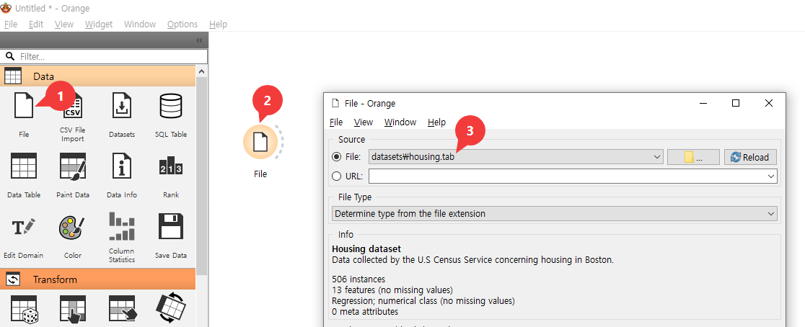
-
Data 에서 “File” 위젯을 클릭한다.
-
“File” 노드를 더블클릭한다.
-
File 창에서 Source를 “housing.tab“으로 선택한다.
필드명을 한글로 바꾸기
생소한 영어단어들 때문에 학습에 방해가 되니, 필드명을 한글로 바꾸자.
다음과 같이 바꾼다. 괄호 안은 설명이니 입력은 하지 말자.
- CRIM: 범죄율(1인당 범죄 발생률)
- ZN: 주거지비율(주변의 주거지 비율)
- INDUS: 상업지 비율(주변의 상업지 비율)
- CHAS: 찰스강 여부(찰스강에 접해 있으면 1, 아니면 0)
- NOX: 일산화질소 농도
- RM: 방 갯수
- AGE: 주변 노후주택비율(그 집이 아니라 주변에 1940년 이전 건축된 주택 비율)
- DIS: 직업센터 거리(직장이 몰려 있는 곳까지의 거리)
- RAD: 고속도로 접근성
- TAX: 재산세율
- PTRATIO: 학생교사비율
- B: 흑인 비율
- LSTAT: 하위계층비율
- MEDV: 주택가격(단위: $1,000)
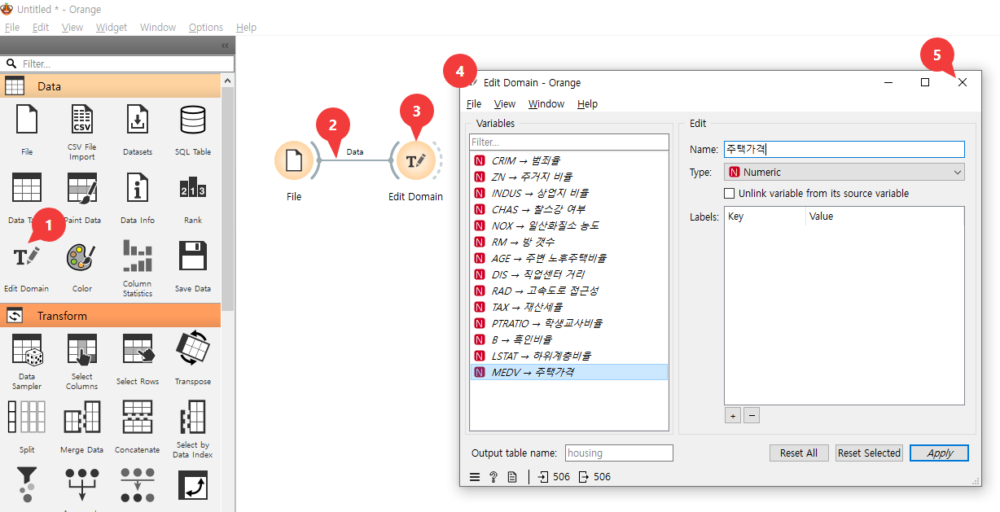
-
Data에서 “Edit Domain” 위젯을 클릭한다.
-
“File” 노드와 “Edit Domain” 노드를 연결한다.
-
“Edit Domain” 노드를 더블클릭한다.
-
“Edit Domain” 창이 나타나면 필드의 이름을 모두 바꾼다.
-
닫기 버튼을 클릭한다.
Scatter Plot로 값 보기
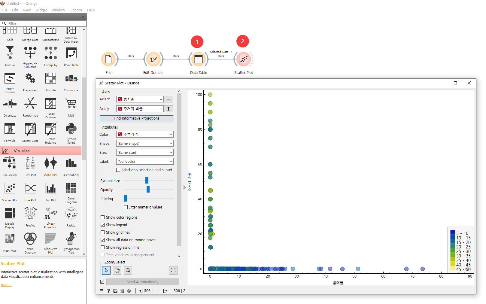
-
Data Table 위젯을 추가하고 선을 연결한다.
-
Scatter Plot 위젯을 추가하고 선을 연결한다. 그리고 더블 클릭한다.
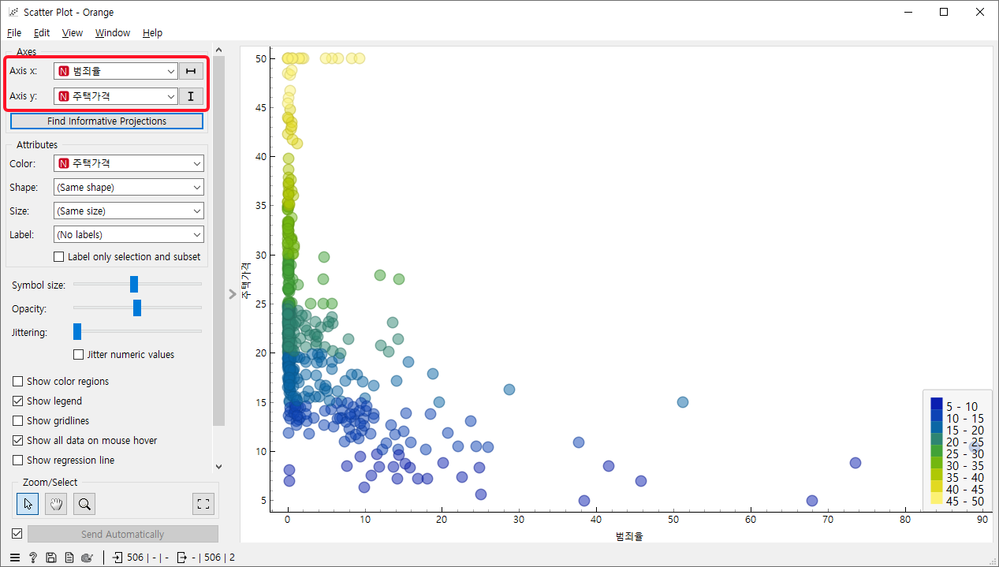
위와 같이 범죄율과 주택가격 등의 상관관계 등을 확인할 수 있다.
범죄율이 낮을수록 주택의 가격이 높고, 범죄율이 높은 곳은 비싼 주택이 전무한 것을 볼 수 있다.
AI 모델 학습시키기
여기서는 Linear Regression을 사용하겠다.
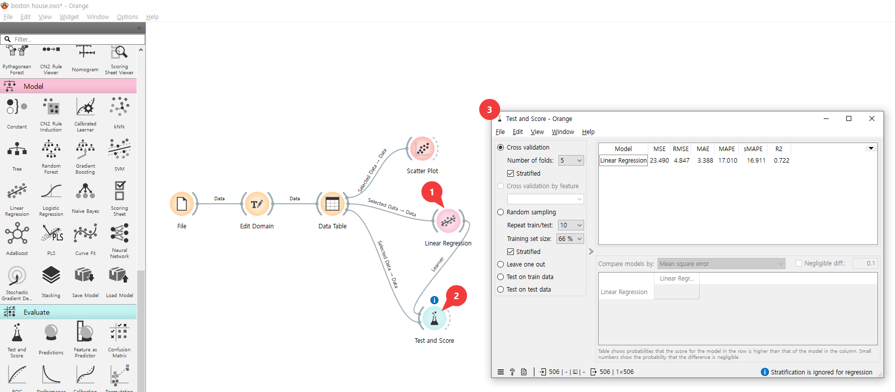
-
Model에서 “Linear Regression” 위젯을 추가하고 “Data Table” 노드와 연결한다.
-
Evaluate에서 “Test and Score” 위젯을 추가한다. 그리고 “Data Table” 노드와 연결한다. 그리고 “Linear Regression” 노드와도 연결한다. 그리고 “Test and Score” 노드를 더블클릭한다.
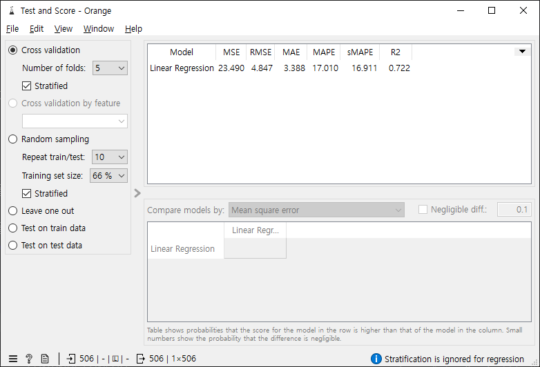
학습 결과가 바로 나타난다.
Linear Regression 결과창 지표 설명
보통은 R2와 RMSE 지표를 우선 본다.
MSE
- Mean Squared Error. 평균 제곱 오차
- 오차를 제곱해서 평균 낸 것.
- 해석: 오차를 제곱했기 때문에 오차가 날수록 이 값은 매우 커진다. 오차를 크게 놓고 보고 싶을 때 사용. 단, 제곱된 상태라 금액에 대한 직관적인 이해는 어렵다.
- 작을수록 학습이 잘 된 것 = 모델 성능이 좋은 것
RMSE
- Root Mean Squared Error. 평균 제곱근 오차
- MSE에 루트를 씌워 단위를 원래 주택가격 단위로 맞춘 것. 그래서 금액에 대한 직관적인 이해가 쉽다.
- 해석: MSE의 장점인 큰 오차에 민감함은 유지하면서도 MAE처럼 실제 금액 단위로 해석 가능하다.
- 작을수록 학습이 잘 된 것 = 모델 성능이 좋은 것
MAE
- Mean Absolute Error. 평균 절대 오차
- 실제 가격과 예측 가격의 에 절대값을 씌워 평균한 것.
- 해석: 만약 MAE가 3이라면, 이 주택가격의 단위가 $1,000 이므로, 약 $3,000 정도 싸거나 비싸게 맞추는구나 라고 직관적으로 이해한다.
- 작을수록 학습이 잘 된 것 = 모델 성능이 좋은 것
MAPE
- Mean Absolute Percentage Error, 평균 절대 백분율 오차
- 오차가 실제 가격의 몇 %수준인지를 비율로 나타낸 것.
- 해석: 만약 MAPE가 15%라면, 실제 집값 대비 평균 15% 정도의 오차율을 보이며 예측한다.
- 작을수록 학습이 잘 된 것 = 모델 성능이 좋은 것
sMAPE
- Symmetric Mean Absolute Percentage Error, 대칭 평균 절대 백분율 오차
- MAPE의 단점인 실제값이 너무 작으면 왜곡되는 문제를 보완하기 위해 분모에 실제값과 예측값의 평균을 넣어 대칭적으로 계산한 오차 비율
- 해석: 만약 MAPE가 15%라면, 실제 집값 대비 평균 15% 정도의 오차율을 보이며 예측한다.
- 작을수록 학습이 잘 된 것 = 모델 성능이 좋은 것
R2
- R Squared. 결정계수. R2는 R의 제곱이라는 뜻.
- 이 모델이 얼마나 많은 부분을 예측할 수 있는가를 나타내는 비율
- 해석: 0~1의 값을 가지는데 이 값이 1이면 100% 완벽하게 집값을 맞추었다는 뜻.
- 1에 가까울수록 학습이 잘 된 것 = 모델 성능이 좋은 것. 0.7 이상이면 괜찮은 모델. (나쁜 모델은 음수가 나오기도 함)
AI 모델에게 예측 준비
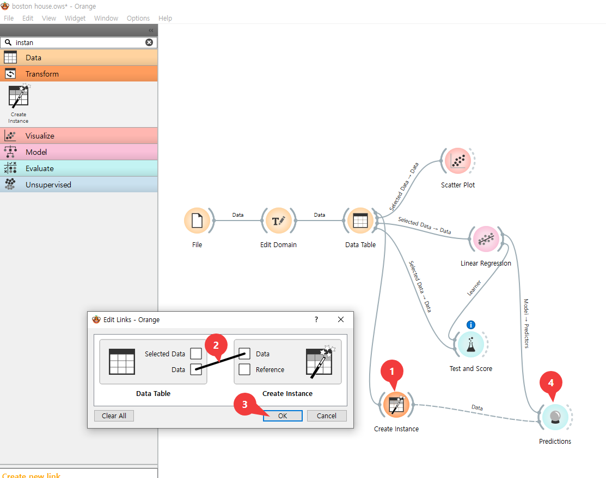
-
Transform의 “Create Instance” 위젯 추가하고 “Data Table“과 연결하기
-
연결 관계 설정하는 창이 나타나면 Data 와 Data를 연결하도록 수정한다.
-
OK 버튼을 눌러 Edit Links 창을 닫는다.
-
Predictions 위젯을 추가한다.
AI 모델에게 값 넘겨주며 예측시키기
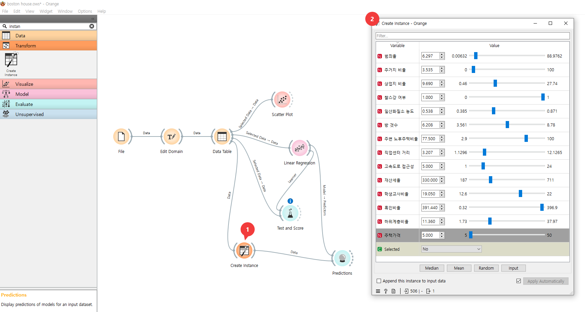
-
“Create Instance” 노드를 더블클릭한다.
-
Boston Housing 데이터 양식에 맞게 입력할 수 있는 창이 나타나면 값을 다양하게 바꿔본다. 이 때 주택가격은 가장 낮은 가격인 5로 바꿔둔다.
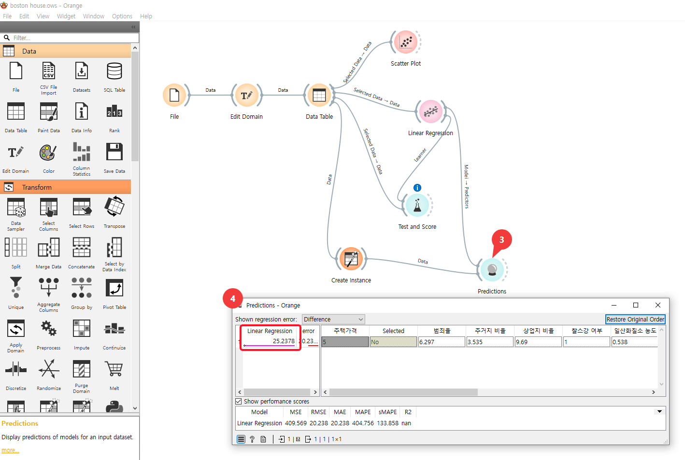
-
“Predictions” 노드를 더블클릭한다.
-
예측 창이 열리고 이 상황에 따른 주택의 가격이 25.2378으로 예측된다. 이 단위가 $1,000이므로 $25,237.8로 예측되었다.
실습 4 - 선형회귀 다항회귀
선형회귀
선형회귀의 앞 부분은 보스턴 주택가격 실습을 이용합니다. 보스턴 주택가격을 먼저 완성해 주세요.
선형회귀 모델이 만든 그래프의 기울기와 절편 보기
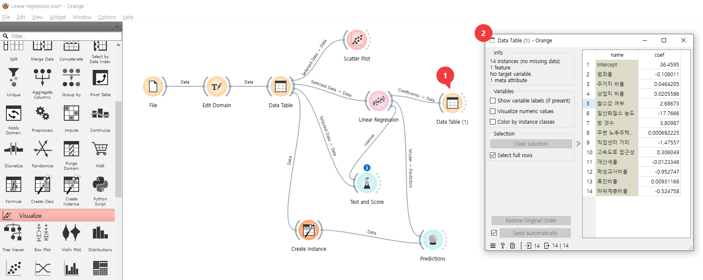
-
Data에서 “Data Table” 위젯을 추가하고, “Linear Regression” 노드와 연결한 다음, “Data Table” 위젯을 더블클릭한다.
-
Linear Regression 모델에서 학습한 결과가 나타난다.
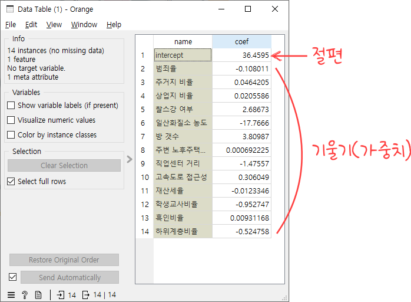
1번이 Intercept인데 절편을 나타낸다.
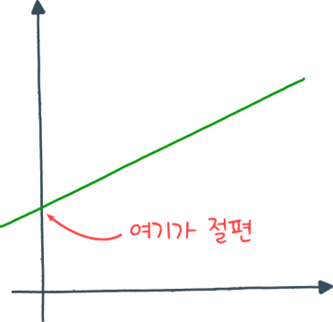
절편은 x의 값이 0이 되는 곳의 y값 = y축과 직선이 만나는 곳 이다.
그 아래 범죄율, 주거지 비율, 상업지 비율, … 등은 집값에 영향을 미치는 요소들의 가중치이다.
그래서 이걸 식으로 나타내면 다음과 같다.
집값 = -0.108011 * 범죄율 + 0.0464205 * 주거지 비율 + 0.0205586 * 상업지 비율 + ….. + -0.524758 * 하위계층 비율 + 36.4595
값이 크면 클수록 집값에 영향을 많이 미친다.
범죄율의 경우 음수인데, 범죄율이 높을수록 집값이 떨어진다고 학습한 결과이다.
그래프로 직선 보기
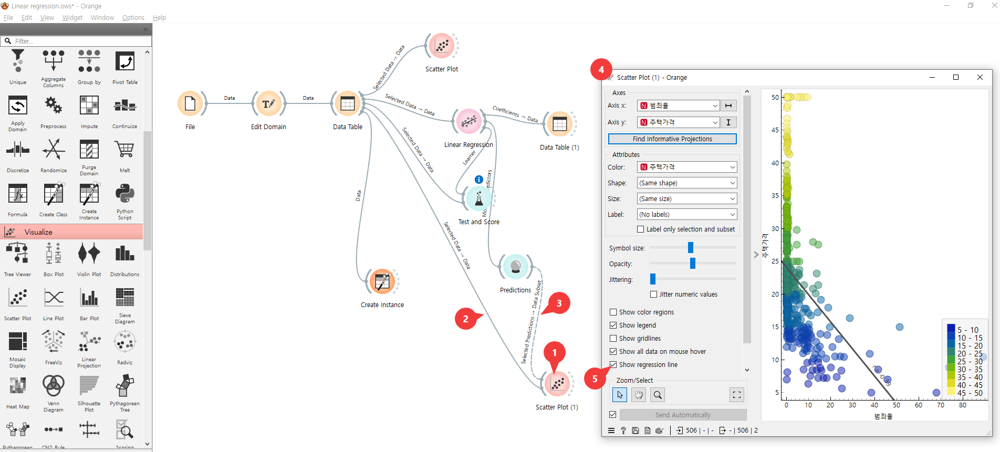
-
Visualize에서 “Scatter Plot” 위젯을 추가한다.
-
“Data Table” 노드와 방금 전 추가한 “Scatter Plot” 노드를 연결한다.
-
“Predictions” 노드와 방금 전 추가한 “Scatter Plot” 노드를 연결한다.
-
Scatter Plot 창이 나타난다.
-
“Show regression line” 옵션을 체크표시가 나타나도록 변경한다.
이제 Linear Regression 모델이 학습하면서 만든 그래프의 직선이 나타난다.
Axis X의 값을 범죄율, 주거지 비율 등으로 변경해 가며 확인한다.
다항회귀
데이터 만들기
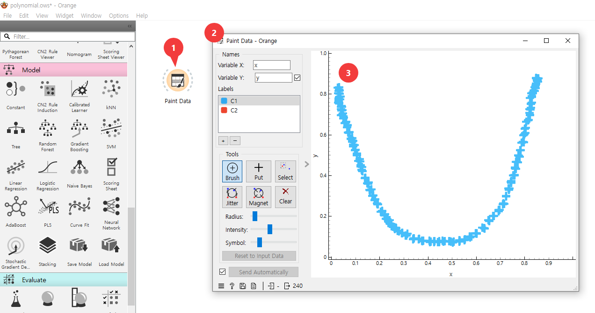
-
Data 에서 “Paint Data” 위젯을 추가하고 더블클릭한다.
-
Paint Data 창이 나타난다.
-
오른쪽 그래프 부분에 마우스로 위 그림과 비슷하게 그린다.
이제 우리의 데이터는 직선 그래프로는 예측하기 어려운, 곡선형으로 예측해야 하는 데이터로 만들어졌다.
데이터를 시각화해서 보기
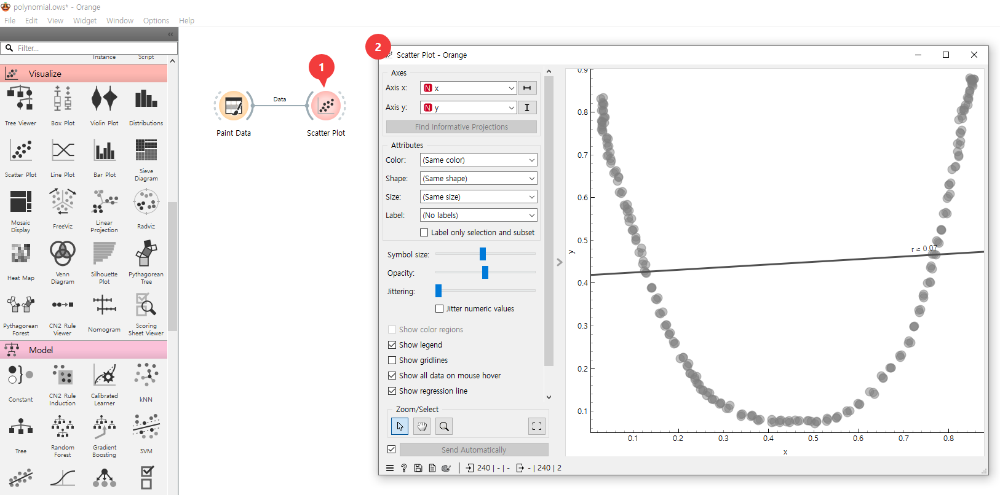
-
Visualize에서 “Scatter Plot“을 추가하고 “Paint Data” 노드와 연결한다.
-
scatter plot 형식으로 방금 전 “그려 넣은” 데이터의 모양을 볼 수 있다.
데이터의 Feature와 Target 구분하기
Paint Data는 데이터를 쉽게 만들어 주지만 target을 지정해 주지 못한다. 그래서 Select Columns 위젯을 이용해 target을 지정해 준다.
-
Feature: 독립변수, X, target 값을 결정하는 요인.
-
Target: 종속변수, Y, 주택가격 등 feature 들에 의해 결정된 값.

-
Transform에서 “Select Columns” 위젯을 추가한다.
-
Select Columns 창이 나타나면 Features 항목에서 “Y” 를 Target 항목으로 끌어내린다.(드래그 앤 드롭)
-
닫기 버튼을 누른다.
이제 X축의 값이 feature이고, Y축의 값이 target이 되었다.
애드온 추가 - Educational 애드온
다항 회귀를 위한 Polynomial Regression 위젯을 설치하기 위해 “Educational” 애드온을 설치한다.
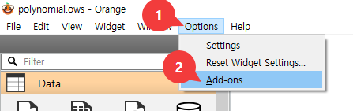
-
메뉴에서 “Options” 를 선택한다.
-
“Add-ons…“를 선택한다.
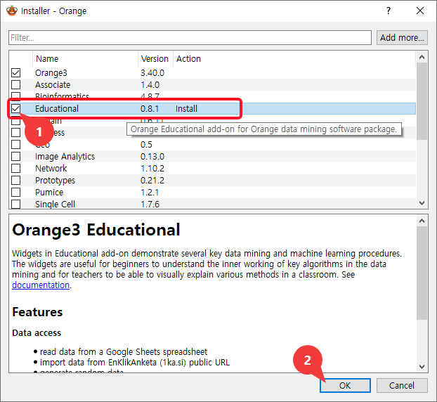
-
애드온 Installer 창에서 “Educational“을 선택한다. (체크가 된 상태여야 함)
-
OK 버튼을 누른다.
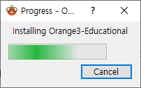
애드온이 설치된다. 약 1분 정도 소요된다.
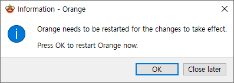
설치가 끝나면 다시 시작하겠냐고 물어본다. “OK“를 눌러 다시 시작한다.
Polynomial Regression 위젯 추가
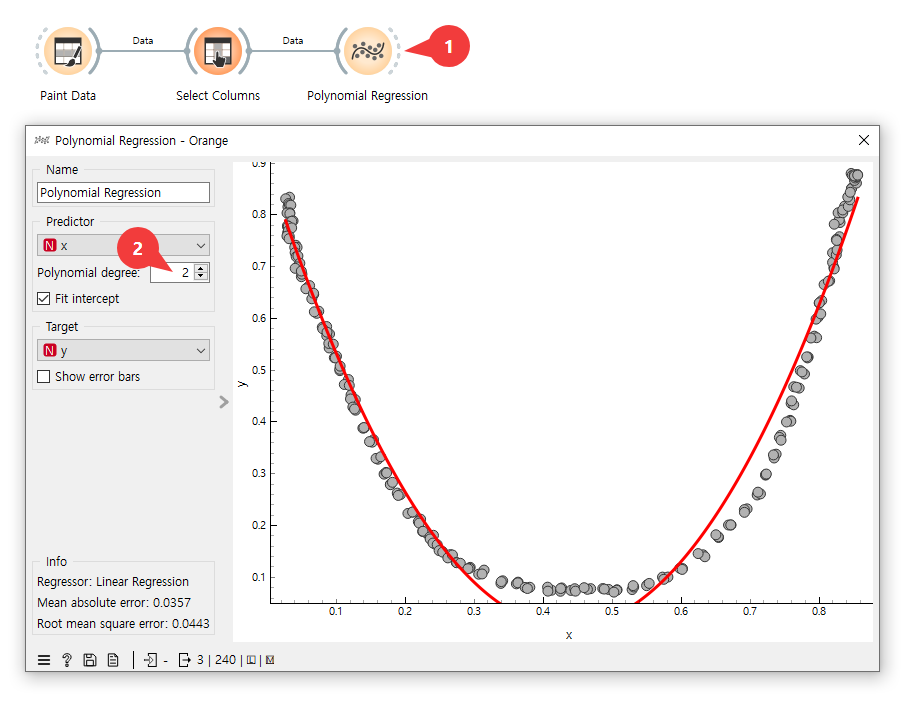
-
“Scatter Plot” 노드는 삭제한다.
-
아마도 맨 밑에 있을 Educational에서 “Polynomial Regression” 위젯을 추가하고 “Paint Data” 노드와 연결한다. 그리고 더블클릭한다.
-
Polynomial degree의 값을 “2“로 세팅한다. 데이터와 매우 비슷한 곡선 모양으로 학습된 것을 확인할 수 있다.
다항 위젯 성능 테스트
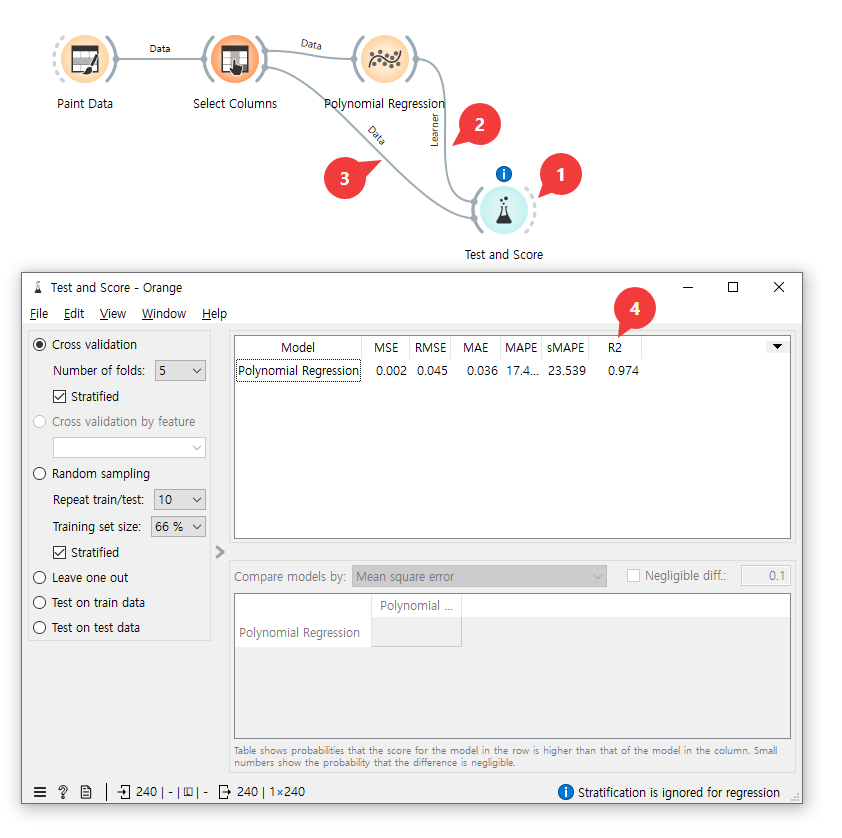
-
Evaluate 에서 “Test and Score” 위젯을 추가한다.
-
“Polynomial Regression” 노드와 “Test and Score” 노드를 연결한다. 이 때 Learner 로 연결되었는지 = 연결선에 Learner라고 표시되는지 확인한다. 만약 이렇게 나오지 않으면 선을 더블클릭해 Learner라고 나오도록 수정한다.
-
“Select Columns” 노드와 “Test and Score” 노드를 연결한다. 이 때 Data 로 연결되었는지 = 연결선에 Data 라고 표시되는지 확인한다.
-
R2의 값을 확인한다. 0.974면 매우 훌륭한 모델이다.
Linear Regression과의 성능 비교
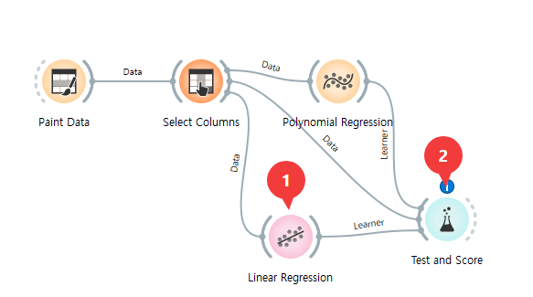
-
Model에서 “Linear Regression” 위젯을 추가하고 “Select Columns“와 연결하고, “Test and Score“와도 연결한다.
-
“Test and Score” 노드를 더블클릭한다.
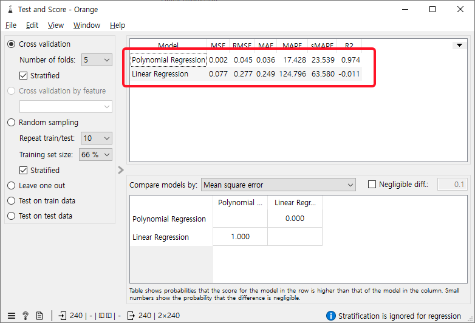
두 모델, “Polynomial Regression“과 “Linear Regression“의 성능 차이가 한 눈에 나타난다.
이런 데이터의 경우 Linear Regression의 R2 값은 음수로 매우 성능이 좋지 않음을 알 수 있다.
실습 5 - 과적합
데이터 만들기
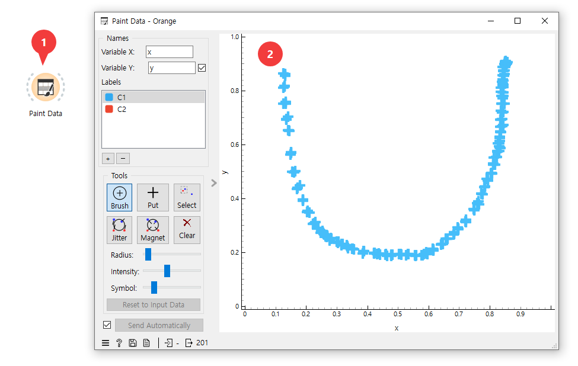
-
Data 에서 “Paint Data” 위젯을 추가하고 더블클릭한다.
-
오른쪽 그래프 부분에 마우스로 위 그림과 비슷하게 그린다.
이제 우리의 데이터는 직선 그래프로는 예측하기 어려운, 곡선형으로 예측해야 하는 데이터로 만들어졌다.
이상치 만들기
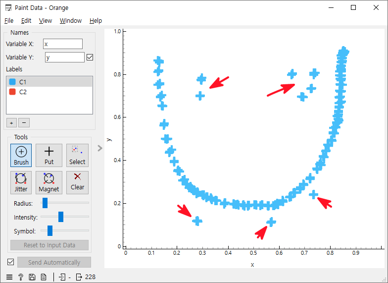
화살표로 표시한 것처럼 원래의 큰 틀과 어긋나는 값들(이상치)을 마우스 클릭으로 추가한다.
데이터의 Feature와 Target 구분하기
Paint Data는 데이터를 쉽게 만들어 주지만 target을 지정해 주지 못한다. 그래서 Select Columns 위젯을 이용해 target을 지정해 준다.
-
Feature: 독립변수, X, target 값을 결정하는 요인.
-
Target: 종속변수, Y, 주택가격 등 feature 들에 의해 결정된 값.
-
Transform에서 “Select Columns” 위젯을 추가한다.
-
Select Columns 창이 나타나면 Features 항목에서 “Y” 를 Target 항목으로 끌어내린다.(드래그 앤 드롭)
-
닫기 버튼을 누른다.
이제 X축의 값이 feature이고, Y축의 값이 target이 되었다.
애드온 추가 - Educational 애드온
이미 Educational 애드온이 설치되어 있으면 이 챕터는 넘어간다.
다항 회귀를 위한 Polynomial Regression 위젯을 설치하기 위해 “Educational” 애드온을 설치한다.
-
메뉴에서 “Options” 를 선택한다.
-
“Add-ons…“를 선택한다.
-
애드온 Installer 창에서 “Educational“을 선택한다. (체크가 된 상태여야 함)
-
OK 버튼을 누른다.
애드온이 설치된다. 약 1분 정도 소요된다.
설치가 끝나면 다시 시작하겠냐고 물어본다. “OK“를 눌러 다시 시작한다.
Polynomial Regression 위젯 추가
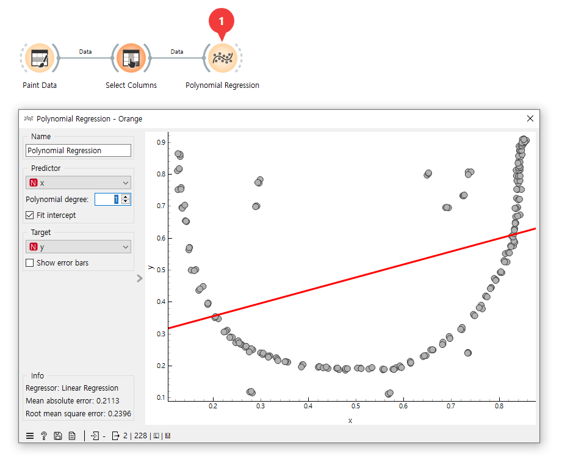
- 아마도 맨 밑에 있을 Educational에서 “Polynomial Regression” 위젯을 추가하고 “Paint Data” 노드와 연결한다. 그리고 더블클릭한다.
과적합 발생시키기
Polynomial Degree = 2 일 때
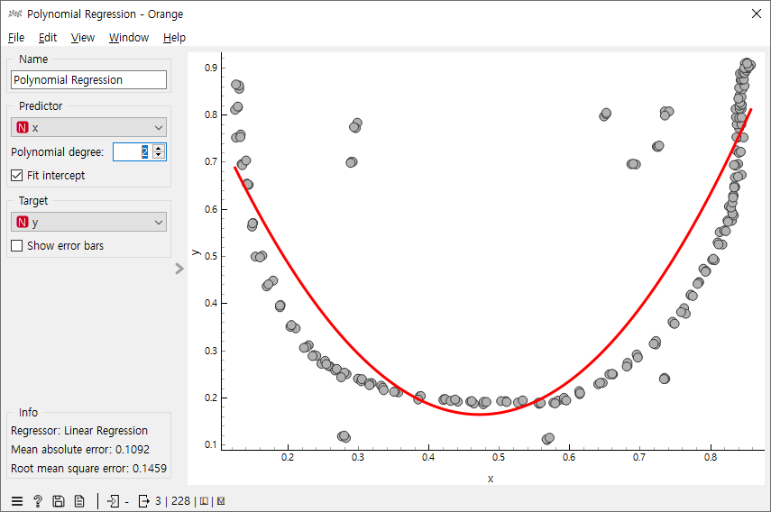
큰 패턴을 따를 뿐 과적합은 발생하지 않았다.
Polynomial Degree = 4 일 때
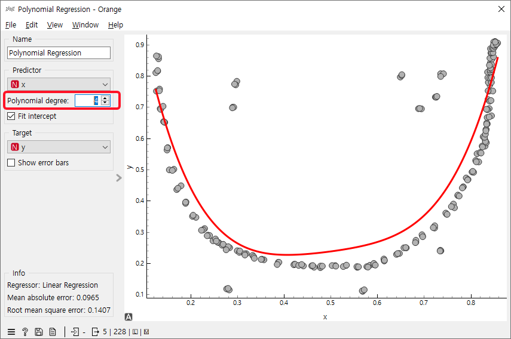
패턴의 모양에 근접했다. 하지만 이상치를 따라 약간 변형되었다. (이상치 제거가 필요한 이유)
Polynomial Degree = 10 일 때
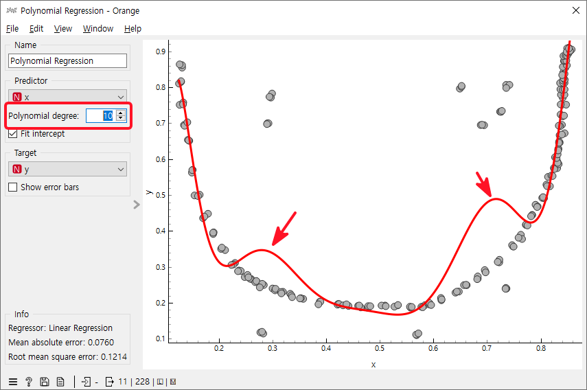
원래의 패턴에서 벗어나 이상치를 따라가는 과적합이 상당히 발생했다.
실습 6 - K-NN
데이터 만들기

-
“Paint Data” 위젯을 추가하고 더블클릭한다.
-
마우스를 이용해 이런 모양으로 데이터를 그린다.
| X축의 값 | Y축의 값 |
|---|---|
| 0 ~ 0.2 | 0.2 |
| 0.2 ~ 0.4 | 0.4 |
| 0.4 ~ 0.6 | 0.6 |
| 0.6 ~ 0.8 | 0.8 |
| 0.8 ~ 1.0 | 1.0 |
- 만들어진 데이터의 갯수는 여기서 확인할 수 있다. 여기서는 마우스를 그림을 그려 총 456개의 데이터를 만들어 냈음을 알 수 있다.
데이터의 Feature와 Target 구분하기
Paint Data는 데이터를 쉽게 만들어 주지만 target을 지정해 주지 못한다. 그래서 Select Columns 위젯을 이용해 target을 지정해 준다.
-
Feature: 독립변수, X, target 값을 결정하는 요인.
-
Target: 종속변수, Y, 주택가격 등 feature 들에 의해 결정된 값.
-
Transform에서 “Select Columns” 위젯을 추가한다.
-
Select Columns 창이 나타나면 Features 항목에서 “Y” 를 Target 항목으로 끌어내린다.(드래그 앤 드롭)
-
닫기 버튼을 누른다.
이제 X축의 값이 feature이고, Y축의 값이 target이 되었다.
K-NN 성능 테스트

-
Model에서 “KNN” 위젯을 추가한다.
-
Evaluate 에서 “Test and Score” 위젯을 추가한다.
-
“KNN” 노드와 “Test and Score” 노드를 연결한다. 연결선에 “Learner” 라고 적혀 있어야 한다.
-
“Select Columns” 노드와 Test and Score“ 노드를 연결한다. 연결선에 “Data” 라고 적혀 있어야 한다.

-
“Test and Score” 노드를 더블클릭한다.
-
RMSE값을 보니 충분히 훌륭한 결과를 보여준다.
-
R2값을 보니 충분히 훌륭한 결과를 보여준다.
K-NN 동작 테스트
특이하게 입력한 데이터를 이용해 K-NN의 동작을 테스트 해 보자.

-
Transform에서 “Create Instance” 위젯을 추가한다.
-
“Select Columns” 노드와 “Create Instance” 노드를 연결한다.
-
연결하자 마자 “Edit Links” 창이 나타나는데 “Data - Data“로 되어 있는 것을 확인하고 “OK” 버튼을 누른다.

-
Evaluate에서 “Predictions” 위젯을 추가한다.
-
“KNN” 노드와 “Predictions” 노드를 연결한다. 연결 선에 “Model - Predictions” 라고 나타나야 한다.
-
“Create Instance” 노드와 “Predictions” 노드를 연결한다. 연결 선에 “Data” 라고 나타나야 한다.

-
“Predictions” 노드를 더블클릭한다.
-
Predictions 창이 나타난다.
-
“Create Instance” 노드를 더블클릭한다.
-
Create Instance 창이 나타난다. 이 때 Predictions 창이 뒤로 가려서 안보일텐데, 모니터 화면 맨 아래 태스크바에서 “Predictions“를 누르면 다시 나타나서 위 그림과 같은 상태가 된다.
-
독립변수인 x의 값을 슬라이드를 조절해 변경한다.
-
x값이 바뀔 때마다 KNN에서 찾아낸 값이 달라지는 것을 확인할 수 있다.
Error의 값은 신경쓰지 말자. 우리가 Create Instance 창에서 x값만 바꾸고 정답인 y값은 바꾸지 않았기 때문이다.
테스트할 요소들
기본적으로 K(확인할 이웃의 수)의 값은 5이다. 설정을 만지지 않았다면 K=5인 상태다.
독립변수 X
독립변수인 x의 값을 0.1, 0.3, 0.5, 0.7. 0.9로 순서대로 바꿔보자.

그 값들은 가로로 길게 준 값들의 중간쯤이다.
x = 0.1인 경우,

y = 0.2로 동일하게 준 그 가로선의 중간쯤이 되고, 이 부근에서 x축 상에서 가까운 이웃을 찾으니 빨간 원안에 있는 데이터가 될 테고 모두 y=0.2라서 K-NN의 결과도 아래와 같이 0.2근처의 값이 나타난다.

x = 0.3인 경우,

y = 0.4로 동일하게 준 그 가로선의 중간쯤이 되고, 이 부근에서 x축 상에서 가까운 이웃을 찾으니 빨간 원안에 있는 데이터가 될 테고 모두 y=0.4라서 K-NN의 결과도 아래와 같이 0.4근처의 값이 나타난다.

K(계산에 사용할 이웃의 수) 변경
지금까지는 기본값인 K=5인 상태에서의 테스트였다.

K=100으로 바꾸고 테스트해 보자.
아까와 같이 x=0.112인 경우

똑같이 x=0.112로 주었는데,
-
아까 k = 5일 때는 0.203581,
-
지금 k = 100일 때는 0.266492 이다.
이유는,

100개의 이웃을 찾아서 평균을 내야 하는데, 아래에는 대략 90개의 자료 밖에 없어 x축에서 가장 가까운 0.25 정도까지의 이웃까지 찾아서 그 값을 평균냈기 때문이다.
X값이 0.2 ~ 0.4까지의 Y값은 모두 0.4이기 때문에 평균이 약간 올라갔다.
실습 7 - Decision Tree
데이터 만들기
금리에 따른 측량횟수라는 데이터를 가상으로 만들어 사용한다. 이번 실습에서는 금리가 낮을수록 측량횟수가 많다는 가정으로 데이터를 만들어 사용하자.

-
Data에서 “Paint Data” 위젯을 추가하고 더블클릭한다.
-
X를 “금리”, Y를 “측량횟수“로 바꾼다.
-
마우스를 이용해 우하향의 데이터 그래프를 그린다.
데이터 값 조정
Paint Data 위젯은 x축과 y축이 모두 0 ~ 1.0 사이의 값을 갖도록 되어 있다.
우리의 데이터 자체가 가상의 데이터이긴 하지만 현실감을 주기 위해,
X축은 금리이니 0 ~ 1 사이의 값이 1.0 ~ 3.0 사이의 값을 갖도록 조정하고,
Y축은 측량횟수이니 0 ~ 1 사이의 값이 100 ~ 500 사이의 값을 갖도록 조정하자.

-
Transform에서 “Formula” 위젯을 추가한다.
-
“Paint Data” 노드와 “Formula” 노드를 연결한다.
Formula 설정 창에서 X축과 Y축의 값을 조정한다.

-
“Formula” 노드를 더블클릭한다.
-
Formula 창의 메뉴에서 “New“를 누른다.
-
데이터가 숫자였으니 Numeric 을 선택한다.
“금리” 필드 값 조정

-
우리가 만든 “금리”, “측량횟수” 필드 중 먼저 “금리” 필드의 값을 조정하기 위해 “금리“를 입력한다.
-
“금리” 필드의 0 ~ 1 사이의 값을 1 ~ 3 으로 조정하기 위해, “금리 * 2.0 + 1.0” 을 입력한다.
-
금리를 조정하는 수식이 완성된 것을 확인한다.
금리 := 금리 * 2.0 + 1.0
“측량횟수” 필드 값 조정

-
“New” 버튼을 누르고 “Numeric“을 선택한다.
-
“측량횟수” 필드의 값을 조정하기 위해 “측량횟수“를 입력한다.
-
“측량횟수” 필드의 0 ~ 1 사이의 값을 100 ~ 500 으로 조정하기 위해, “측량횟수 * 400 + 100” 을 입력한다.
-
측량횟수를 조정하는 수식이 완성된 것을 확인한다.
-
“Send” 버튼을 누른다.
-
닫기 버튼을 누른다.
측량횟수 := 측량횟수 * 400 + 100
조정된 데이터 확인

-
Data 에서 “Data Table” 위젯을 추가한다. 그리고 “Formula” 노드와 “Data Table” 노드를 연결한다. 그리고 “Data Table” 노드를 더블클릭한다.
-
Data Table 창이 나타나고 기존에 0~1 사이에만 있던 값들이 금리는 1.0 ~ 3.0, 측량횟수는 100 ~ 500 사이인 것을 확인할 수 있다.
feature와 target 정리

-
Transform에서 “Select Columns” 위젯을 추가한다. “Data Table” 위젯과 연결한다. “Select Columns” 위젯을 더블클릭한다.
-
Feature에 있던 “측량횟수“를 마우스로 끌어내려 Target에 붙인다.
이제 금리는 feature = 독립변수가 되었고,
측량횟수는 target = 종속변수가 되었다.
데이터 시각화

-
Visualize 에서 “Scatter Plot” 위젯을 추가한다. “Select Columns” 노드와 연결한다. “Scatter Plot” 노드를 더블클릭한다.
-
Scatter Plot를 보며 대략적인 금리와 측량횟수 간의 관계를 확인한다.
확인이 끝나면 Scatter Plot는 삭제한다.
Decision Tree 모델 추가

- Model 에서 “Tree” 위젯을 추가한다. 그리고 “Select Columns” 노드와 연결한다.
Decision Tree 모델 성능 테스트

-
Evaluate 에서 “Test and Score” 위젯을 추가한다.
-
“Tree” 노드와 “Test and Score” 위젯을 연결한다. 이 때 선에 “Learner” 라고 적혀 있어야 한다.
-
“Select Columns” 노드와 “Test and Score” 위젯을 연결한다. 이 때 선에 “Data” 라고 적혀 있어야 한다.
-
“Test and Score” 위젯을 더블클릭한 다음, “RMSE” 항목을 확인한다.
-
Test and Score 창에서 “R2” 항목을 확인한다.
Decision Tree 성능 조정

-
“Tree” 노드를 더블클릭한다.
-
“Tree” 노드의 성능을 조정하기 위한 값의 기본값이 다음과 같았음을 확인한다.
- “Limit the maximal tree depth to” : 5
위와 같은 설정일 때 R2의 값이 0.994였음을 알 수 있다.
“Tree” 모델의 Depth 줄이기
Decesion Tree 모델의 depth는 이 모델이 몇 단계나 깊이 들어가며 계속 가지를 쳐 나갈건지에 대한 옵션값이다.
Depth를 줄이면 세밀하게 정리하는 단계가 줄어들어 정확도가 떨어진다.


R2의 값이 depth가 기본값인 5일때는 0.994였는데, 2로 줄이니 0.943으로 떨어진 것을 확인할 수 있다.
“Tree” 모델의 Depth 늘리기
depth를 늘리면 더 많은 가지를 치며 세밀하게 정리해 정확도가 높아지지만 너무 높이면 과적합이 될 수 있다.


depth를 10으로 올리니 R2의 값이 0.996으로 depth=5일 때(0.994)보다 높아진 것을 볼 수 있다.
실습 8 - Random Forest
Random Forest 는 실습 7. Decision Tree 실습을 기반으로 합니다. 먼저 이 실습을 먼저 완성해 주세요.
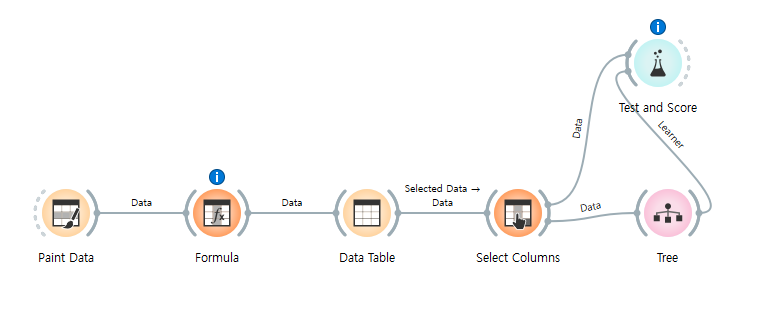
실습 7 완성 모습
Random Forest 모델 추가
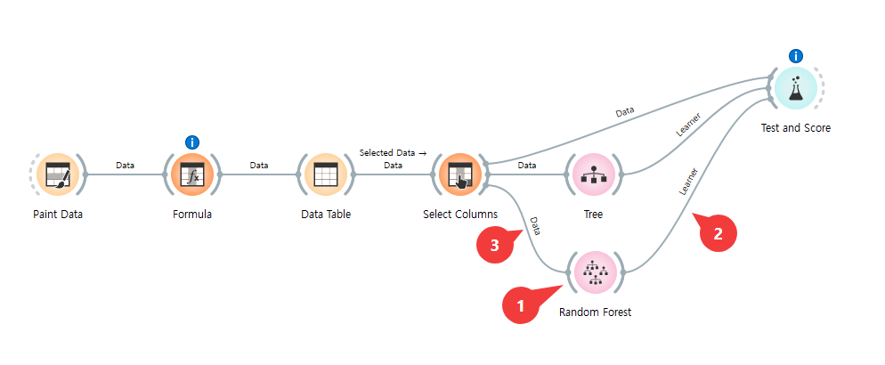
-
Model에서 “Random Forest” 위젯을 추가한다.
-
“Random Forest” 노드와 “Test and Score” 위젯을 연결한다. 이 때 선에 “Learner” 라고 적혀 있어야 한다.
-
“Select Columns” 노드와 “Random Forest” 위젯을 연결한다. 이 때 선에 “Data” 라고 적혀 있어야 한다.
Random Forest 모델 성능 테스트
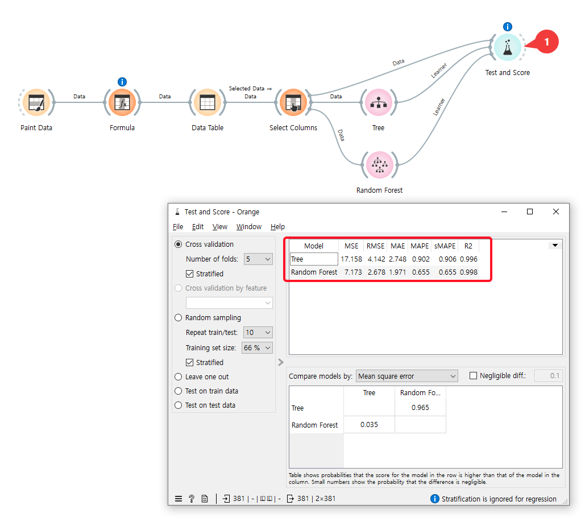
- “Test and Score” 노드를 더블클릭한다.
Test and Score 창이 나타나며 결과를 보여준다.
같이 연결된 기존 Decision Tree 모델과의 결과도 비교해 볼 수 있다.
Random Forest 모델 성능 설정
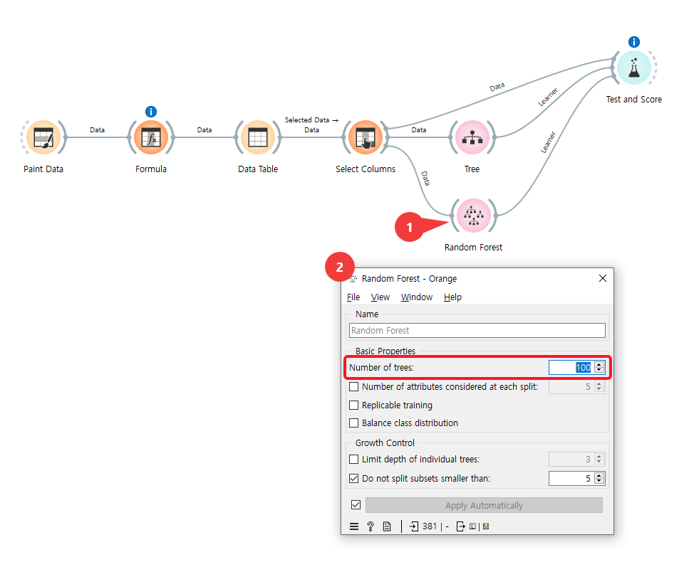
-
“Random Forest” 노드를 더블클릭한다.
-
Random Forest 설정창을 보면 이 Random Forest 모델이 사용하는 기본 decision tree의 갯수가 100개 임을 알 수 있다. 그러니까. 이 100개의 decision tree가 예측한 값을 평균내어 사용하는 것이다.
“Number of Trees“의 값을 올리면 더 정확하게 예측할 수 있지만 시간이 오래 걸린다. 지금 정도의 데이터에서 “Number of Trees” 값을 1000 으로 올리면 “Test and Score” 노드에서 약 5초 정도 시간이 걸린다고 보여준다.
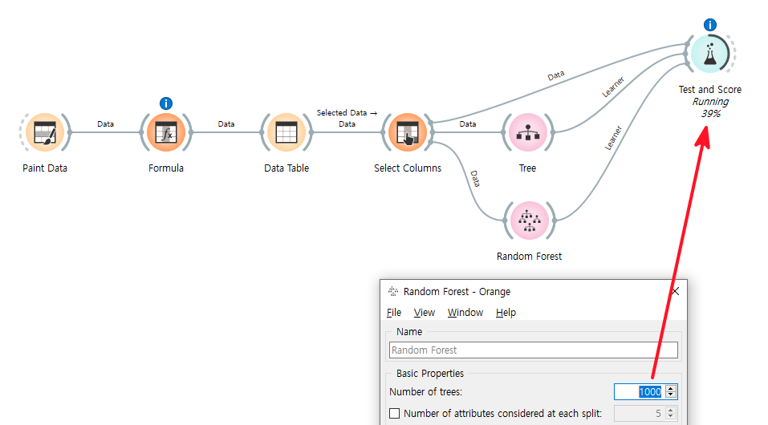
사실 계속 이런 식으로 진행상황이 표시되고 있었는데, 데이터 수도 적고 decision tree의 수도 적어서 순식간에 진행되었던 것이다.
실습 9 - Gradient Boosting
Random Forest 는 실습 8. Random Forest 실습을 기반으로 합니다. 먼저 이 실습을 먼저 완성해 주세요.
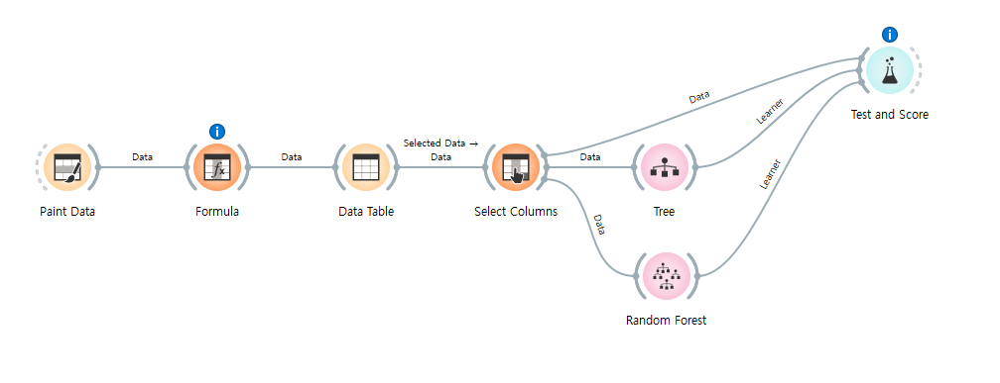
실습 8 완성 모습
Gradient Boosting 모델 추가
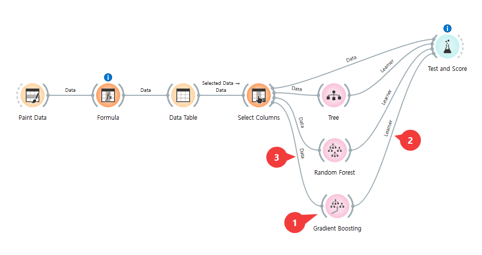
-
Model에서 “Gradient Boosting” 위젯을 추가한다.
-
“Gradient Boosting” 노드와 “Test and Score” 위젯을 연결한다. 이 때 선에 “Learner” 라고 적혀 있어야 한다.
-
“Select Columns” 노드와 “Gradient Boosting” 위젯을 연결한다. 이 때 선에 “Data” 라고 적혀 있어야 한다.
Gradient Boosting 모델 성능 테스트
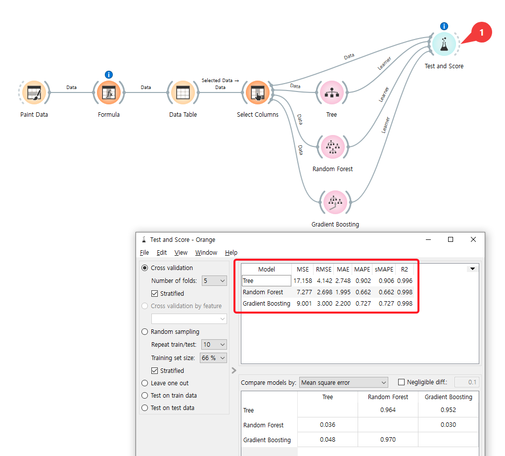
- “Test and Score” 노드를 더블클릭한다.
Test and Score 창이 나타나며 결과를 보여준다.
같이 연결된 기존 Decision Tree, Random Forest 모델과의 결과도 비교해 볼 수 있다.
데이터가 매우 예측가능한 선형 구조여서 각 모델 간의 차이가 크지 않지만, 이론상으로는 Decision Tree < Random Forest < Gradient Boosting 순으로 정확도가 높아진다. (오른쪽으로 갈 수록 정확도가 높음)
Gradient Boosting 모델 성능 설정
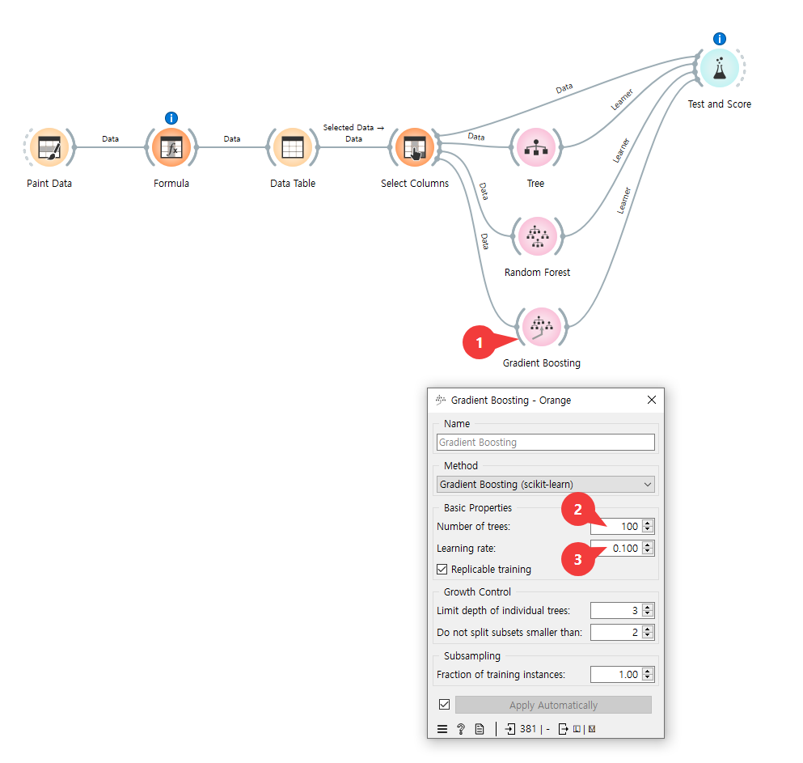
-
“Gradient Boosting” 노드를 더블클릭한다.
-
사용할 Decision Tree의 수의 기본값이 100이다.
-
Learning rate의 기본값은 0.1이다. 이 값이 낮으면 이전 나무의 오차를 강하게 반영하지만 속도가 느려지고, 이 값이 높으면 빠르게 학습하지만 이전의 오차를 지나쳐 버릴 수 있는 문제가 생긴다. 이 값은 보통 0.01 ~ 0.3 정도의 값을 가진다.
Learning rate의 값을 낮추면 Decision Tree의 수는 늘려야 한다. 꼼꼼하게 학습하려면 Decision Tree의 수가 많아야 한다.